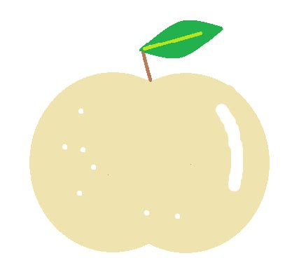
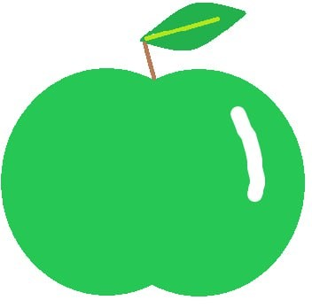
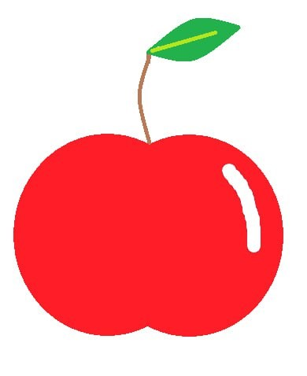

Види яблук
В Україні вирощується велика кількість різних сортів яблук, які відрізняються смаком, кольором та текстурою.

Сорт яблук 1
Сорт яблук 2

Сорт яблук 3
Сорт яблук 4

Сорт яблук 5

Сорт яблук 6

Сорт яблук 7

Сорт яблук 8
Сорт яблук 9
Сорт яблук 10
Сорт яблук 11

Сорт яблук 12

Сорт яблук 13